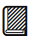
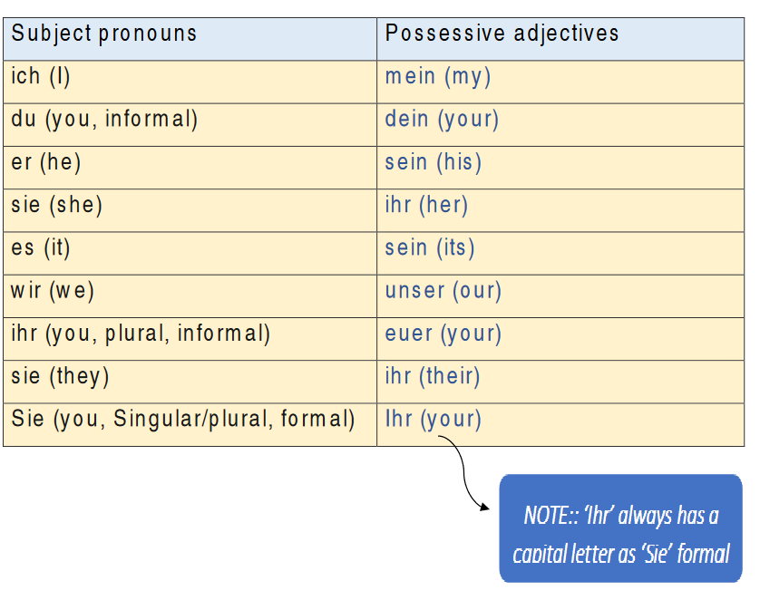
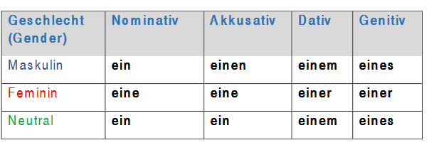
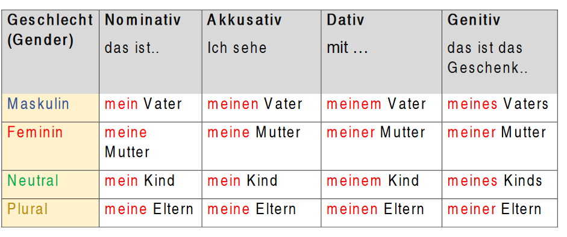

Possessive adjectives
What are possessive adjectives?
We use possessive adjectives to express who possesses sth or something belongs to somebody. In German, we call it ‘Possessivartikel ‘(possessive articles).
Beispiel:
Mein Laptop (my laptop), ihre Kinder (her children)
Ist das dein Buch?  (Is this your book?)
The possessive adjectives in German are as follows:

The endings change according to gender (Masculine, Feminine, or Neutral), number (Singular or plural) and case (Nominative, accusative, dative or genitive)
To make it easy: The endings of these possessive adjectives follow the same pattern of the indefinite article ‘ein’.

Possessivartikel im Nominativ, Akkusativ, Dativ und Genitiv

Also so: dein-, sein-, ihr-, unser-, eu(e)r-, ihr-, Ihr-
Übung (exercise):
Ergänzen Sie die Lücken mit Possessivartikel.
(Fill the gaps with the possessive article.)
Example: Ich habe einen Bruder. Mein Bruder ist 10 Jahre alt.
(I have a brother. My brother is 10 years old.)
- Wir haben ....... Auto vekauft. (We sold our car)
- Hilfst du .... Mutter in der Küche? (do you help your mother in the kitchen?)
- ..... Haus ist schön (His house beautiful)
- Ist das .... Handy? (Is this your phone?)
- Sind das .... Taschen, Herr Müller? (Are these your bags, Mr. Müller?)